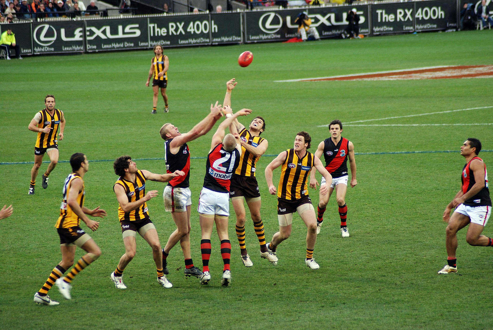
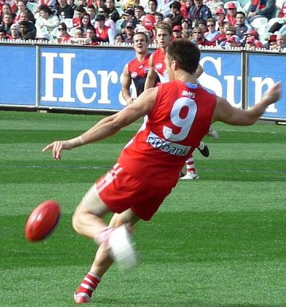
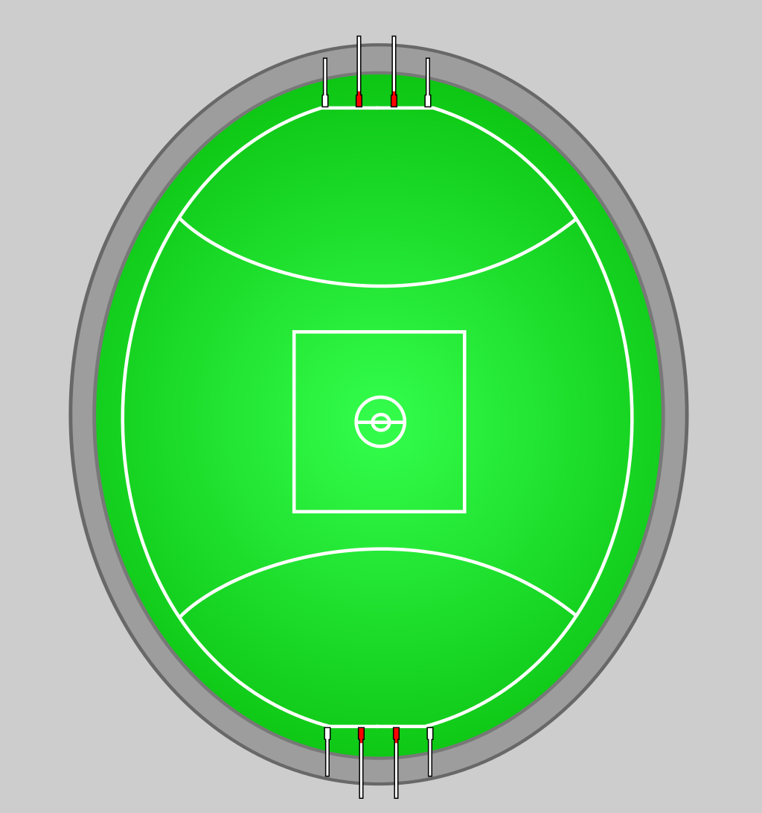
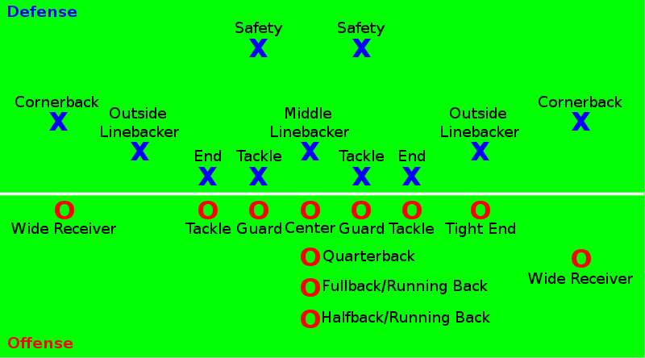
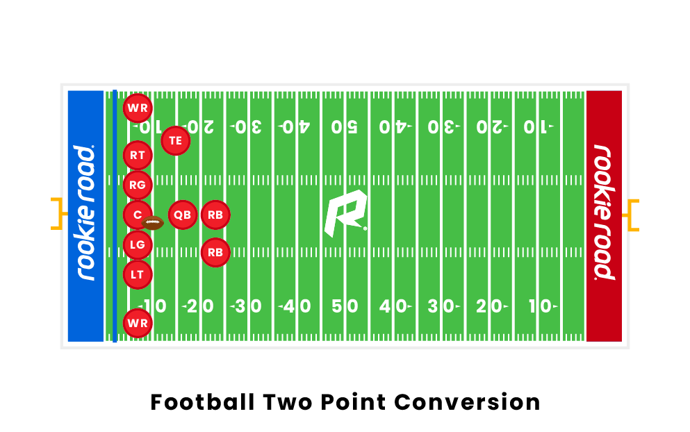
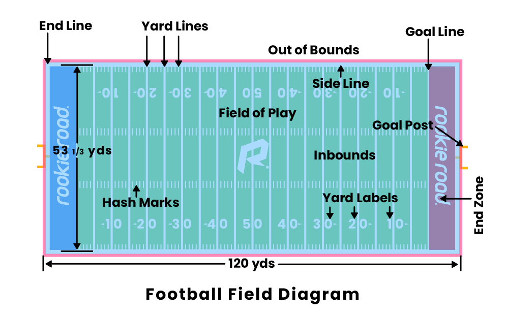
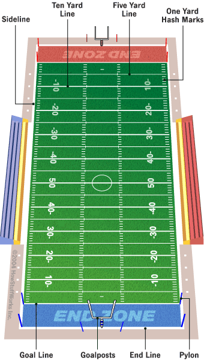

基本是直接从维基百科摘抄来的，但整合成了只有我感兴趣的部分。
1. Rugby Football
橄榄球（Rugby）又称拉格比足球（Rugby football），源自其发源地拉格比公学（Rugby School，是位于英格兰中部沃里克郡拉格比镇上的一间男女兼收寄宿学校，也是英格兰最古老的公学之一，成立于1567年），香港简称为“榄球”，通常专指联合式橄榄球（Rugby Union football）或英式橄榄球，是一种使用椭圆形球进行奔跑推进得分的团体球类运动，是最早出现的橄榄球类运动。
“橄榄球”的中文译名是因其使用橄榄形（椭圆形）用球而得名，可以泛指一切使用椭圆形球的球类运动，在英语中并无类似称呼。
英式橄榄球和英式足球一样起源于英国，都是衍生自欧洲古代民间传统足球的一种团队运动。上述“欧洲古代传统足球”中的“足球”一词是泛指足球类运动，并不是指大中华地区和非英语国家认知中“足球”的英式足球。橄榄球和英式足球等其他足球类运动有共同的起源，都源自19世纪英格兰公立中学之间发展出的公校足球。而由英格兰北部拉格比公学自创的“拉格比规则”在1845年确立，时间上比英国足协确立现代英式足球规则的时间更早，以至于原版的英式足球不得不创造一个返璞词“协会足球”（association football，简称soccer！）加以区分。
传统的联合会式橄榄球，竞赛双方各派15名球员上场，比赛场地为长方形草地，球场两端各有一“H”型球门。比赛目的是持球冲到对方球门线后方以球触地得分（达阵 Try），触地得分后可再取得一次罚球射门机会补加分数；另亦可以在比赛中踢球越过球门横杆上方而得分。当比赛时间结束时，以得分较多者获胜。比赛过程中，防守一方可擒抱攻方持球员以阻止其进攻，但擒抱方式和位置均有所限制，以避免选手受伤。
近年来流行的7人制橄榄球，是橄榄球运动的一种变化，其场地、规则与传统15人制橄榄球大致相同，但人数少、比赛节奏快、平均得分高，普遍受到欢迎，重要性日增，为世界运动会的正式竞技项目。
除此之外，尚有许多运动是由橄榄球和足球衍生发展出来，包括同样使用橄榄形球的联盟式橄榄球（Rugby League）、美式橄榄球（American football）和加拿大式橄榄球（Canadian football，跟美式很像）。澳式橄榄球（Australian rules football）和流行于爱尔兰的盖尔式足球（Gaelic football），发展相对较独立。盖尔式足球虽然使用圆形球，但与英式橄榄球运动有几分相似，有时会被拿来作比较。
2. Australian football
Ireland, Gaelic football
Asutrilian football

踢球进门柱间是基本得分方法。

球场示意图——

关于澳式起源，目前“爱尔兰起源说”说服力最强，当年因为马铃薯饥荒导致许多爱尔兰人离开故土谋求生计，加上淘金潮，维多利亚州是爱尔兰移民的一个主要聚居区，澳式橄榄球有爱尔兰血统并不稀奇。
而维多利亚州在当时并没有英式橄榄球运动流行的记录，一向球风粗野的英式橄榄球也不太可能被用来为被誉为“绅士”的板球手们提供冬季锻炼，加上英式橄榄球以跑阵为主的得分方式和澳式橄榄球依赖射门得分有着本质上的不同。
3. American football
美式橄榄球（英语：American football，在美国则只称为“football”），另称美式足球，是在美国流行的一种由英式橄榄球衍生而来的竞技体育运动。
美式橄榄球与加拿大式橄榄球十分相像，两者常常被一起并称为烤盘（Gridiron，比赛场地划记着许多线，像烤盘）足球。美式橄榄球比赛的目的是要把球带到对手的“端区”得分，主要用持球或传球两种方式。得分方法有多种，包括持球越过底线，传球给在端区内的队友，或把球踢过两枝门柱中间射门。比赛时间完时得分较多的一队胜出。由于球赛中球员往往会与对方有激烈的身体冲撞，因此需穿护具及头盔出赛。
美式橄榄球首先由哈佛大学学生以一种名叫“Ballown”的运动开始，这个运动的目的是要带着球跑过对手。在美国内战结束后美式橄榄球开始在大学中广泛流行。罗格斯学院和普林斯顿大学在1869年打了史上第一场大学美式橄榄球赛。这个运动最初跟英式足球相近，后来被人们改良至比较接近英式橄榄球。自1880年代起，被称为“美式橄榄球之父”的耶鲁大学教练沃尔特·坎普则把规则进一步改变，包括采用攻防线（line of scrimmage）和记档距离的比赛方式。1905年仍然有18位球员于比赛中受伤死亡。1906年又增加向前传球的规则，攻防线之间设置中立区（neutral zone），以及每队都要有至少6名球员于攻防线列阵，最重要的改革是首推将向前传球（抛传）合法化，使得真正意义上的美式橄榄球开始成形。
美式橄榄球与英式橄榄球的比赛用球明显分别在于美式橄榄球用球上有白色缝线，以利于球员抓球及传球。而英式橄榄球则体型较大并且没有任何缝线。
3.1. Rules
3.1.1. Teams and Positions
A football game is played between two teams of 11 players each. Teams may substitute any number of their players between downs. Individual players in a football game must be designated with a uniform number between 1 and 99.

除了offensive unit进攻球员和defensive unit防守球员还有特勤组，special teams unit。
3.1.2. Scoring
The touchdown (TD, 达阵6分), worth six points, is the most valuable scoring play in American football. A touchdown is scored when a live ball is advanced into, caught in, or recovered in the opposing team's end zone.
The scoring team then attempts a try or conversion (附加得分), more commonly known as the point(s)-after-touchdown (PAT), which is a single scoring opportunity. A PAT is most commonly attempted from the two- or three-yard line, depending on the level of play. If a PAT is scored by a place kick or drop kick through the goal posts, it is worth one point, typically called the extra point. (踢进1分) If it is scored by what would normally be a touchdown it is worth two points, typically called the two-point conversion. (触地2分)

A field goal (FG, 射门3分), worth three points, is scored when the ball is place kicked (定点球, 一个人按着) or drop kicked (落地球, 球扔地上弹起来踢, rugby比较多而美式改尖后不好踢) through the uprights and over the crossbars of the defense's goalposts.
After a PAT attempt or successful field goal, the scoring team must kick the ball off to the other team.
A safety (安全分，安防，自杀球2分) is scored when the ball carrier is tackled in his own end zone. Safeties are worth two points, which are awarded to the defense. In addition, the team that conceded the safety must kick the ball to the scoring team via a free kick.
3.1.3. Field and equipment
Football games are played on a rectangular field that measures 120 yards (110 m) long and $53\frac1{3}$ yards (48.8 m) wide.
end line底线, sideline边线, yard line分码线, hash marks码标, goal line得分线, end zone底线区/端区, goalposts/uprights球门柱.

Weighted pylons (达阵柱) are placed the sidelines on the inside corner of the intersections with the goal lines and end lines.

3.1.4. Duration and time stoppages
Football games last for a total of 60 minutes and are divided into two halves of 30 minutes and four quarters (节) of 15 minutes.
If a down is in progress when a quarter ends, play continues until the down is completed.
Games last longer than their defined length due to play stoppages—the average NFL game lasts slightly over three hours.
如果四节比赛后，双方同分，比赛将会延长15分钟，采用先得分者获胜的规则，而且无需再经过追加得分而直接结束比赛。NFL常规赛比赛若出现加时赛，若一队先通过射门得3分，则比赛不会马上结束，比分落后的一方仍有一次进攻机会，若再次打平则比赛继续。加时赛结束后比分打平，则比赛按平局计算。而在NFL季后赛中若出现加时赛，则需要决出胜负为止。大学比赛的延长赛规定更为繁复与不同。
3.1.5. Advancing the ball and downs
There are two main ways the offense can advance the ball: running and passing. In a typical play, the center (中锋) passes the ball backwards and between their legs to the quarterback (四分卫)in a process known as the snap (发球). The quarterback then either hands the ball off to a running back (跑卫), throws the ball, or runs with it. The play ends when the player with the ball is tackled or goes out-of-bounds or a pass hits the ground without a player having caught it. A forward pass can be legally attempted only if the passer is behind the line of scrimmage; only one forward pass can be attempted per down. As in rugby, players can also pass the ball backwards (向后传球) at any point during a play. In the NFL, a down also ends immediately if the runner's helmet comes off.
The offense is given a series of four plays, known as downs. If the offense advances ten or more yards in the four downs, they are awarded a new set of four downs. (进攻有四档, 须推进>=10 yards)If they fail to advance ten yards, possession of the football is turned over to the defense. (turnover) In most situations, if the offense reaches their fourth down they will punt (弃踢, 方法是进攻队员（特勤组）把球扔下并在球落地之前将其踢向远处。通常进攻一方如果在前三档都未能成功前进十码，而该处位置又超过可以射门的距离，为免在攻守交换后让对方有机会可以在该处开始进攻，便会在第四档时使用弃踢大脚解围。) the ball to the other team, which forces them to begin their drive from farther down the field; if they are in field goal range (射门范围), they might attempt to score a field goal instead.
down (档, 即被对方拦截放倒一次) The offense must advance at least ten yards in four downs or plays; if they fail, they turn over the football to the defense, but if they succeed, they are given a new set of four downs to continue the drive.
除了punt(弃踢)，还有interception(拦截，抄截，防守方接到进攻方的传球)和fumble(掉球，进攻方掉了球被防守方先捡到)也是常见的攻防转换情况。
3.1.6. Kicking
There are two categories of kicks in football: scrimmage kicks, which can be executed by the offensive team on any down from behind or on the line of scrimmage (攻防线), and free kicks. The free kicks are the kickoff (开球。On a kickoff, the ball is placed at the 35-yard line; On a safety kick, the kicking team kicks the ball from their own 20-yard line.), which starts the first and third quarters and overtime and follows a try attempt or a successful field goal; the safety kick follows a safety (安防之后的安防踢不能用球座(tee), 需要扶球手, 也可以选safety punt).
They (after safety) can punt, drop kick or place kick the ball, but a tee (球座) may not be used in professional play. Any member of the receiving team may catch or advance the ball. The ball may be recovered by the kicking team once it has gone at least ten yards and has touched the ground or has been touched by any member of the receiving team.
https://tdl100.com/thread-23658-1-1.html 这里有讨论safety为什么大多数时候选punt而不是kick。 Kick的确能踢更远，但是滞空时间短，所以回攻手能在踢球队队员阻拦自己之前跑出更多的码数； 而punt虽然距离短一些，但高度更高，滞空时间长，踢球组能更快赶到球所在位置，所以回攻手可能跑不了几步就会被拦下来。平均的净码数(=踢的码数-回攻码数)，punt比kick要多5~10码。
下面这块其实我没搞懂，https://www.tdl100.com/thread-34646-1-1.html 看达阵联盟论坛里也有很多人不明白。
The three types of scrimmage kicks are place kicks, drop kicks, and punts. Only place kicks and drop kicks can score points. The place kick is the standard method used to score points, because the pointy shape of the football makes it difficult to reliably drop kick. Once the ball has been kicked from a scrimmage kick, it can be advanced by the kicking team only if it is caught or recovered behind the line of scrimmage. If it is touched or recovered by the kicking team beyond this line, it becomes dead at the spot where it was touched. The kicking team is prohibited from interfering with the receiver's opportunity to catch the ball. The receiving team has the option of signaling for a fair catch, which prohibits the defense from blocking into or tackling the receiver. The play ends as soon as the ball is caught and the ball may not be advanced.
3.1.7. Officials and fouls
裁判们，The back judge, The head linesman/down judge, The side judge, The line judge, The field judge, The center judge.
就打算写到这了，剩下的要多看才清楚，为了方便自己查阅（有时候不方便科学上网）还是把常见犯规放在这里。
进攻方提前移动（False start）：除了在开球线平行移动的一名球员外，进攻方队员在开球前移动。退后5码。
越位（Offside）：在开球前队员越过了球的位置。退后5码。相似的犯规有：在开球前接触对方队员、越入中立区。
阻挡（Holding）：一名队员不公平地用拉球衣，勾人或铲人的方式妨碍对方有机会的阻截手或接球手。如果进攻方犯规或攻防转换中，退后10码（若是发生在距离攻方的端区20码内，则罚退后的码数为距离端区码数的一半；若进攻方在自己的端区，则被判安全球，防守方得2分）。如果防守方犯规，退后5码和进攻方自动获得新的四次进攻机会。
干扰接球（Pass interference）：当球传出后，防守队员推、勾、拉或击倒进攻方有机会接到传球的队员；或接球队员用同样的方式对付防守方队员以避免被对方截球。干扰接球的规则只针对攻守双方在接到球之前有效，一旦他们其中一方接到球后，对方可以拦截或阻止得球方控制球。目前在NFL的规则是，若是防守方干扰接球，则进攻方在犯规处自动获得新的四档进攻（如果犯规发生在端区，那么球将被放在1码线开始进攻）；若是进攻方干扰接球，则会被罚退后10码。在攻防线之上及之后不会吹罚防守方干扰接球犯规。
非法接触（Illegal contact）：防守球员在四分卫持球并且待在口袋时，接球员超过5码之后，对接球员产生明显体身体接触。防守方退后5码和进攻方自动获得新的四次进攻机会。
个人犯规（Personal foul）：处罚防守方，退后十五码且对方自动获得四次进攻。原因包六个项目：粗暴冲击传球者、粗暴冲击踢球员、粗暴冲击置球员（攻方射门中把皮球直立予踢球者射门的人员）、拉扯对方面罩、弯身用头盔拦截对方、飞身在阻挡对方射门后畜意跳压在对方身上（但不会被计算在犯规，若守方已在己方的一码线）。
用头盔拦截进攻球员（Targeting）：属于一种个人犯规，防守方球员故意用头盔拦截进攻球员，且撞击位置于进攻球员颈部以上。防守方退后15码，造成判罚的球员在经过影像重播确定后必须离场。
拖延比赛（Delay of game）：处罚四分卫，后退五码处分，二十五秒或四十秒发球计时器数至零时仍未发球。
非法向前传球（Illegal forward pass）：攻方在攻防线之前的位置向前传球；后退五码处分，并且会消耗一档。
进攻方非法阵型（Illegal formation）：攻防线上少于七人列阵；合法接球员没有在阵型的最左侧和最右侧列阵
场上人数过多（Too many men on the field）：任何一方在发球时超过十一人在场上均会被罚，后退五码。（注意：任何一方在交锋上少于十人都是合法；在2007年季赛中华盛顿红皮队为了纪念在屋中被劫杀的后卫尚•泰勒（Sean Taylor），特意在他死后的那周作客布法罗比尔队的比赛上，防守以十人列阵。）
非法变阵易位（Illegal shift）：进攻方的球员可以在交锋发球前移位，但只限列阵于攻防线以后的球员，并且每次只限一人，攻方要在队友停下来后才可以进行易位，其他球员或者非法球员易位会变被处分五码；防守方则不在此限。
非法接球员前冲（Ineligible receiver downfield）：攻方的合法接球员是指站于锋线最外的两员及所有卫员（发球线以后的球员）；攻方在传球攻击时有上述球员以外的球员越过发球线都会被视为犯规，后退五码。
违反体育精神（Unsportsmanlike conduct）：后退15码处分，处罚的原因有很多种，会由主裁判决定。常见的有:蓄意撞击或言语上辱骂裁判、故意延长得分后的庆祝、连续使用暂停冻结对方踢球员等（守方连续在踢球员踢球前叫两次暂停，以冻结对方并增加心理压力）。同一名球员在无蓄意撞击、辱骂裁判的前提下，被判第2次就必须离场。
蓄意触地(Intentional grounding):处罚四分卫，后退10码，由于蓄意的将球砸向没有合法接球员的地面，用以暂停时间来不断获得新攻势的机会，被裁判发现后予以处罚。
特殊情况
若犯规被罚的码数越过第一次进攻目标线，亦同样自行获得新的进攻权（例如：攻方在“2攻3码”时，守方有球员越位，攻方可以获得新的四次进攻）。若攻守双方被罚的后退的码线位于端区，球会放在2码线开始；若攻守方在已方的2码线内犯规，无论是多少码数的处罚，罚的码数均会变成跟端区的一半距离，直至球的一部分进入端区，对手可获得安全分（2009年超级碗，匹兹堡钢人队正好被处罚了一个相同情况的安全分）。